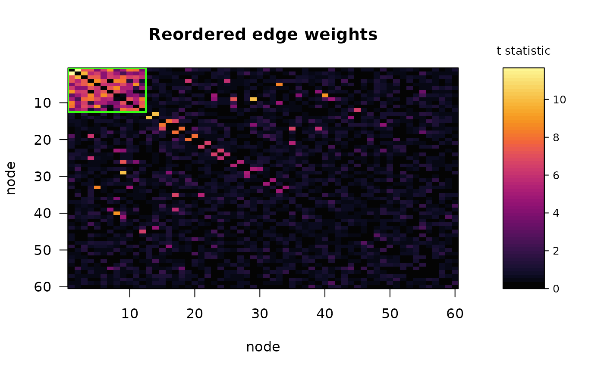
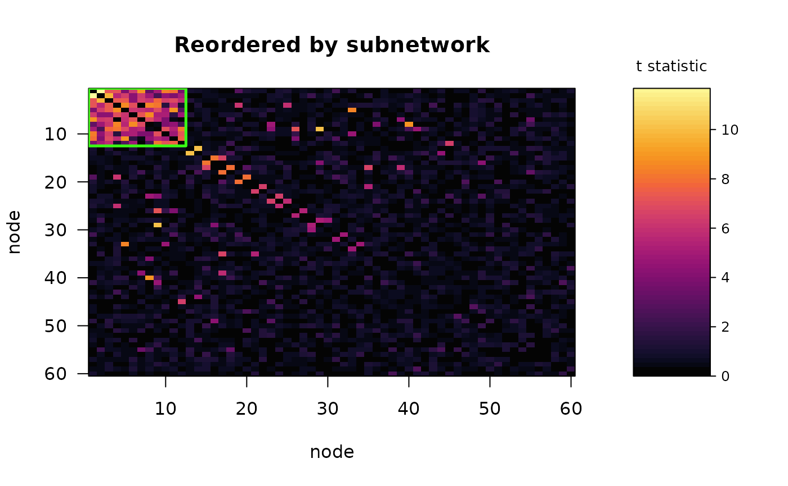

Draws the edge-weight matrix, optionally with nodes reordered so that the extracted subnetworks sit in consecutive blocks along the diagonal, and outlines the significant blocks.
Usage
# S3 method for class 'subnet'
plot(
x,
what = c("reordered", "observed", "both"),
significant_only = TRUE,
col = grDevices::hcl.colors(64, "Inferno"),
main = NULL,
weight_label = NULL,
legend = TRUE,
...
)Arguments
- x
A
subnetobject.- what
"reordered"(default),"observed"for the original node order, or"both"for the two side by side.- significant_only
Outline only the significant subnetworks.
- col
Colour palette.
- main
Panel title, or a vector of two when
what = "both".- weight_label
Label for the colour scale, as a string or an expression. Defaults to the
"statistic"attribute ofW, and to"edge weight"when the matrix carries none.- legend
Draw the colour scale.
- ...
Passed to
graphics::image().
Details
what = "both" puts the matrix as measured next to the reordered version,
sharing one colour scale. That pairing is the honest way to present a
result: a subnetwork is invisible in the original node ordering and obvious
after reordering, and showing only the second panel can make an arbitrary
permutation look like a discovery. Comparing the two is also how you judge
whether a detection is a compact block or a diffuse smear.
The colour scale is labelled with the quantity being displayed. When W
came from edge_stats() or simulate_fc() that label is carried along with
the matrix, so the figure states whether it is showing \(-\log_{10}\) p,
a t statistic, or something else. Supply weight_label for matrices built
by other means.
Examples
sim <- simulate_fc(n = 120, n_nodes = 60, cluster_size = 12, f2 = 0.2,
seed = 11)
fit <- subnet(sim$W, n_perm = 99, seed = 1)
plot(fit) # reordered only
plot(fit, what = "both") # as measured, next to reordered

# A matrix of t statistics from a real study labels itself accordingly
plot(fit, weight_label = "t statistic")
